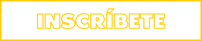

BASU es una organización que nace a partir del interés y motivación de su fundadora de contribuir a la disminución de la generación de residuos producidos por empresas y la sociedad.
Nuestro programa nace en el 2017 con campañas que se comenzaron a realizar para aumentar conciencia en áreas públicas sobre la basura que termina en parques, calles y zonas de recreación común. Hoy en día este programa ha aumentado su nivel de interacción, y hemos creado un programa integral de reciclaje destinado a las empresas, edificios de oficinas y zonas habitacionales, el cual les ayuda a que adopten un modelo operativo que les permita mantener un manejo sustentable de los residuos que producen, además de generar beneficios por los empaques reciclables que se entreguen.
Nuestro impacto está basado en dos premisas:
Somos parte del Club de Economía Circular, ayudamos a generar una economía circular (reduce, reusa, recicla).
Estamos certificados para contribuir a crear un programa Zero Waste to Landfill
Un mejor entendimiento de la sociedad sobre la economía circular, la cual planea un cambio de paradigma, en donde los desechos de unos se convierten en recursos nuevamente, esto a través de la recuperación y reutilización.
Aumento de la educación ambiental de las personas, esto a través de la integración de ECO tips y campañas ambientales en nuestro programa de reciclaje.
Disminución en un 30% del gas metano (gas de efecto invernadero), el cual es producido por la descomposición de la basura que termina en basureros o lugares públicos.

Análisis general de
necesidad y oportunidades
del manejo de residuos.
Sensibilización y
empoderamiento del modelo
de reciclaje.

Instalación de un sistema
operativo basado en
tecnología: APP móvil
vinculada a basureros
inteligentes los cuales ayudan
a llevar el registro de cada
usuario sobre los empaques
que van reciclando.
Acceso a un programa de
lealtad para los empleados
y/o usuarios al usar el sistema
de tecnología integrado.
Reportes mensuales
sobre el progreso del
manejo de residuos.
EL USUARIO DESCARGA LA APP BASU EN SU CELULAR
EL USUARIO REÚNE SUS EMPAQUES A ENTREGAR EN LOS BASUREROS
EL USUARIO SE ACERCA AL BASURERO BASU MÁS CERCANO, ABRE EL APP MÓVIL Y SIGUE LOS PASOS QUE AHÍ LE INDICAN
EL BASURERO DETECTA LOS EMPAQUES QUE EL USUARIO HA DEPOSITADO Y LE APARECEN DE INMEDIATO LOS PUNTOS GANADOS EN EL APP MÓVIL
USUARIO USA PUNTOS GANADOS EN NUESTRA RED SUSTENTABLE DE EMPRESAS
¿Estas interesado en tener el programa de reciclaje de BASU en tu empresa?
Nos contactaremos contigo a la brevedad o si quieres recibir más información
CONTÁCTANOS
CONTACTO@BASUIMPACT.COM
AVISO DE PRIVACIDAD
BASU 2018© TODOS LOS DERECHOS RESERVADOS
POWERED BY NEURACORESTUDIO